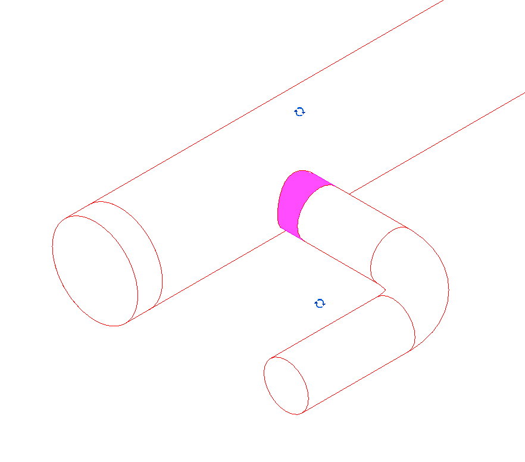
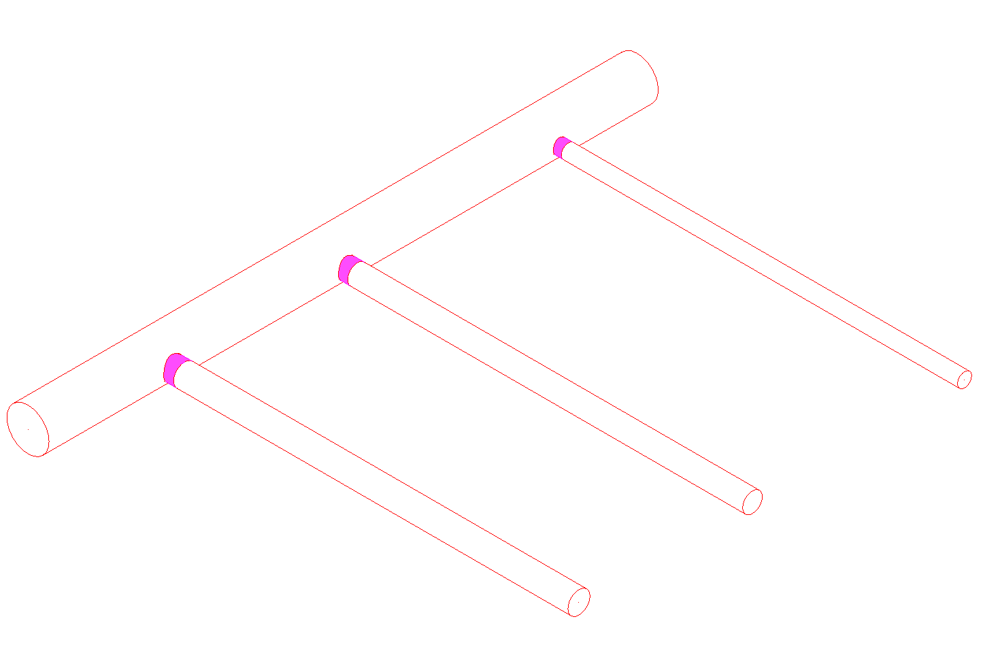
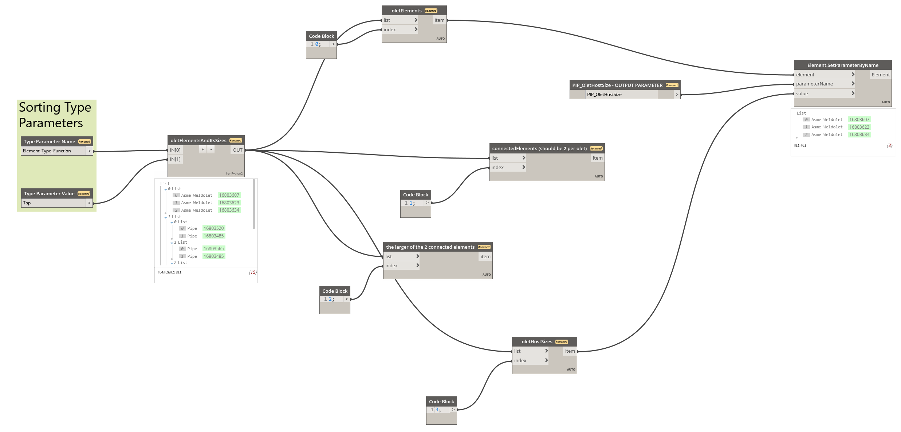
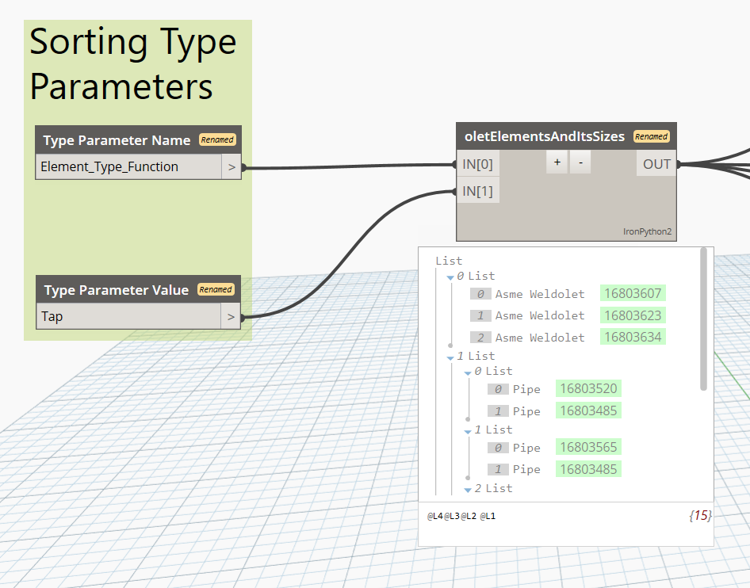
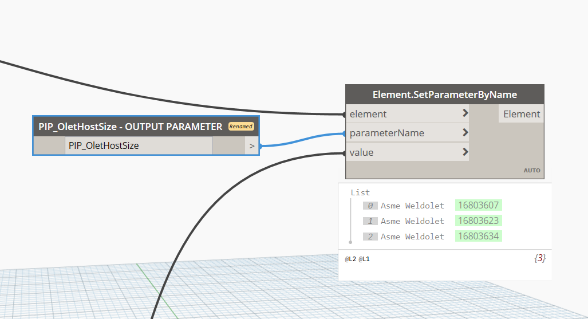
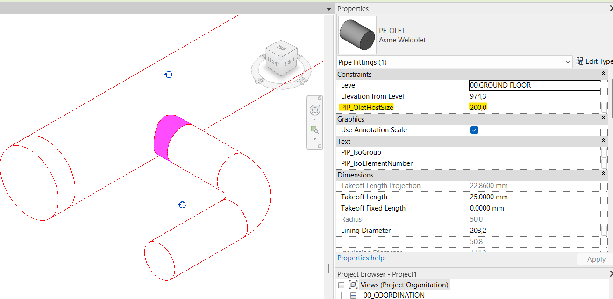

Tap Hosting Pipe Size

When generating Revit tables for fittings, I am often asked to show the size of the pipe that hosts a Tap Pipe Fitting elements. In order to do that we need to identify which fitting is a Tap and does not include all connector sizes, which pipes is it connected to and finally what is their size.

Above we see 3 pipes of different sizes attached to a collector using a Tap Pipe Fitting. Lets look at the Dynamo script and fillout the PIP_OletHostSize parameter.

First we need to filter out all the Tap pipe fittings. I achieve that using Type Parameter called Element_Type_Function with a value of "Tap" applied to each Tap Family Type

We also need to determine where are we going to write the size value. For that I chose a shared parameter called "PIP_OletHostSize"

The script collects all Pipe Fittings whose Element_Type_Function parameter has value of "Tap". It then goes through each one of them, checks the sizes of its connectors,compares them to each other and chooses the largest one to be added to a list. It then spits out all elements with a pair of connectors and a list of their largest connectors. For each Tap there is one Connector Size. It then takes that size and writes it to the PIP_OletHostSize parameter. You can now add that parameter to your Revit Schedule and read the sizes of all Tap connectors.

Hopefully this script will help you save a bit of time and effort. If you have any questions or feedback, feel free to reach out. You can download the script by clicking the button below or by pulling it from my GitHub repository.
Download Solution